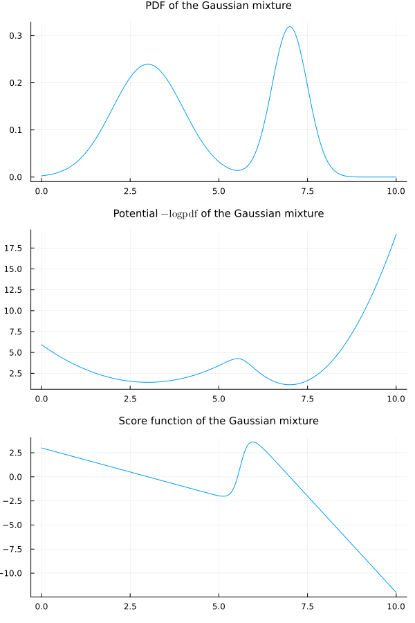
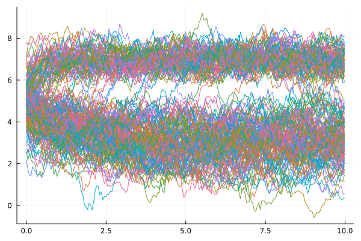
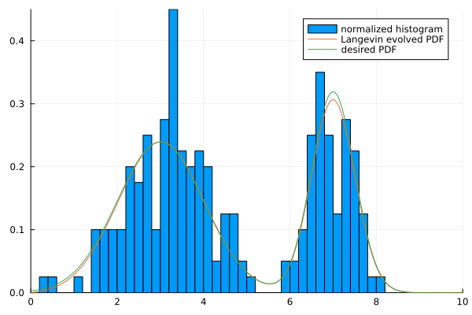
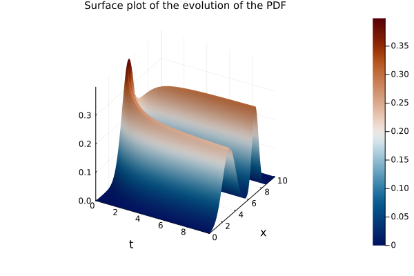
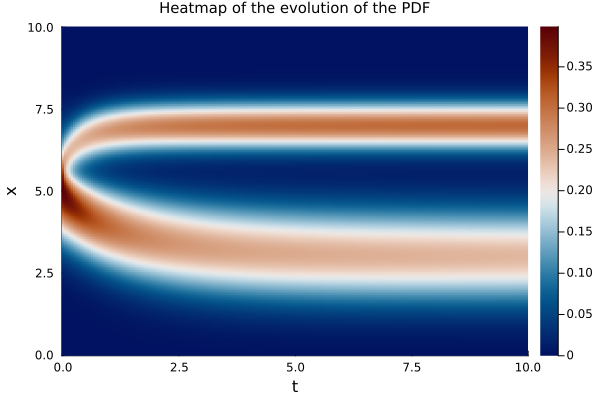
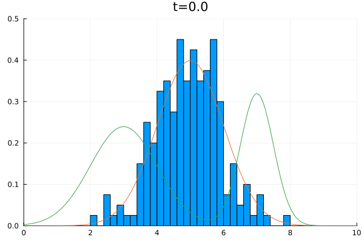
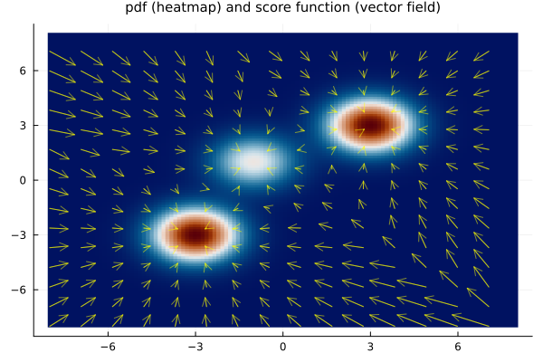
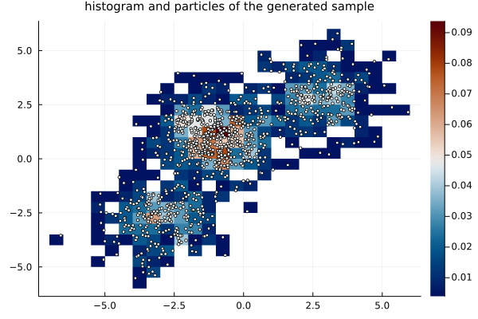
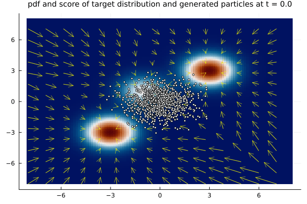
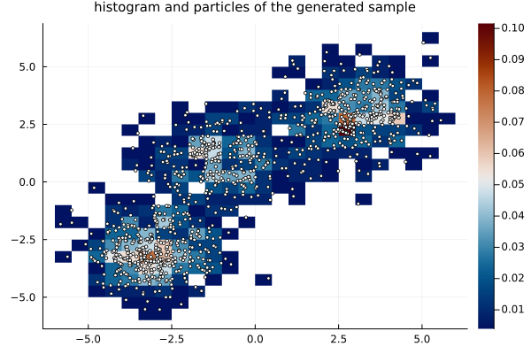

Langevin sampling
Introduction
One of the cornerstones of score-based generative models is the method of sampling from the score function of a distribution via Langevin dynamics. Our aim here is to review the method of sampling via Langevin dynamics based on the score function.
Langevin dynamics
The velocity of a particle moving in a fluid has long been known to be reduced by friction forces with the surrounding fluid particles. For relatively slowly moving particles, when the surrouding fluid flow is essentially laminar, this friction force is regarded to be proportional to the velocity, in what is known as the Stokes law. When the motion is relatively fast and the flow around the particle is turbulent, this friction tends to be proportional to the square of the velocity.
If this were the only force, though, a particle initially at rest would remain forever at rest. That is not the case, as observed by the botanist Robert Brown (1828). His observations led to what is now known as Brownian motion, and which is formally modeled as a Wiener process (see e.g. Einstein (1905) and Mörters and Peres (2010)). A Wiener process describes the (random) position of a particle which is initially at rest and is put into motion by the erratic collisions with the nearby fluid particles.
When in motion, both forces are actually in effect, a deterministic one dependent on the velocity and a random one due to irregular collisions. In a short time scale, the inertia forces are negligible and we recover the Brownian motion. For larger times scales, the Langevin is more appropriate since it takes both forces into account.
Langevin equation
In the Langevin model, both viscous and random collision forces affect the momentum of the particle (Paul Langevin (1908)). In this model, the position $x_t$ of a particle of mass $m$ at time $t$ is given by
\[ m \ddot x_t = - \mu \dot x_t + \alpha \xi_t,\]
where $\mu$ is a proportionality viscosity coefficient associated with the frictional drag force $-\mu\dot x_t$ proportional to the velocity; and $\alpha$ is a proportionality coefficient associated with a white noise term $\xi_t$ modeling the random collisions with the fluid particles. The two coefficients are connected by
\[ \alpha = \sqrt{2\mu k_B T},\]
where $k_B$ is the Boltzmann constant and $T$ is the temperature of the fluid.
The white noise is highly irregular, so the equation above is made rigorous with the theory of stochastic differential equations when casted in the form
\[ \mathrm{d}V_t = \nu V_t \;\mathrm{d}t + \sigma \;\mathrm{d}W_t,\]
where $\{V_t\}_t$ is a stochastic processes representing the evolution of the velocity in time, $\nu = \mu / m$, $\sigma$ is called the diffusion parameter, and $\{W_t\}_t$ is a Wiener process, whose formal derivative represents the white noise. The solution $\{V_t\}_t$ of the equation above is known as the Ornstein-Uhlenbeck stochastic process. The relation between $\sigma$ and $\nu$ becomes
\[ \sigma = \sqrt{\frac{2\nu k_B T}{m}}.\]
This is all fine for a nearly free particle, affected only by friction and by smaller nearby particles. More generally, one also considers a particle under an extra force field with potential $U=U(x)$. In this case, the equation is modified to
\[ m \ddot x_t = - \mu \dot x_t - \nabla U(x_t) + \alpha \xi_t,\]
The rigorous stochastic formulation takes the form of a system,
\[ \begin{cases} \mathrm{d}X_t = V_t\;\mathrm{d}t, \\ \mathrm{d}V_t = (-\nu V_t - \nabla U(X_t))\;\mathrm{d}t + \sigma \;\mathrm{d}W_t. \end{cases}\]
These are called the Langevin equation or Langevin system.
The overdamped limit
The term $m \ddot x_t$ represents the inertial force. When the motion is relatively slow, this inertia might be negligible when compared with the viscous foce. Dropping this term yields the equation
\[ 0 = - \mu \dot x_t - \nabla U(x_t) + \alpha \xi_t.\]
The corresponding stochastic system reduces to a single equation
\[ \nu \mathrm{d}X_t = - \nabla U(X_t)\;\mathrm{d}t + \sigma \;\mathrm{d}W_t.\]
The time scale for this approximation to hold is a short time scale represented by $\tilde t = t / \nu$. Rescaling leads to the overdamped Langevin equation
\[ \mathrm{d}\tilde X_t = - \nabla_{\tilde x}\tilde U(\tilde X_{\tilde t})\;\mathrm{d}\tilde t + \sqrt{\frac{2k_B T}{m}}\;\mathrm{d}\tilde W_{\tilde t}.\]
We will do the details of this change of variables below, when performing a different approach of taking the overdamped asymptotic limit $\nu \rightarrow \infty$.
For the moment, notice that, in the absence of a force field $U=U(x)$, we are left (dropping the tildes in the rescaled equation) with
\[ \mathrm{d}X_t = \sqrt{\frac{2k_B T}{m}} \;\mathrm{d}W_t,\]
which is the Brownian motion equation, with the solution
\[ X_t = \sqrt{\frac{2k_B T}{m}} W_t.\]
In this way, we recover the Brownian motion from the Langevin equation as the overdamped limit without a force field.
Now we go back to the rescaling to a more representative time scale and deduce the overdamped approximation at the limit $\nu \rightarrow \infty$. More details in Section 6.5 of Grigorios Pavliotis (2014). Making the change of time scale to
\[ \tilde t = \frac{t}{\nu},\]
we write the new position as
\[ {\tilde X}_{\tilde t} = X_t = X_{\nu \tilde t}.\]
Thus, the velocity satisfies
\[ {\tilde V}_{\tilde t} = \frac{\mathrm{d}{\tilde X}_{\tilde t}}{\mathrm{d}\tilde t} = \nu V_t.\]
Since ${\tilde X}_{\tilde t} = X_t$, we set
\[ \tilde U(\tilde x) = U(x).\]
The differentials satisfy
\[ \begin{align*} \mathrm{d}\tilde t & = \frac{1}{\nu}\;\mathrm{d}t, \\ \mathrm{d}{\tilde X}_{\tilde t} & = \mathrm{d}X_t, \\ \nabla_{\tilde x}\tilde U(\tilde x) & = \nabla_x U(x), \\ \mathrm{d}{\tilde V}_{\tilde t} & = \nu\;\mathrm{d}V_t. \end{align*}\]
The Wiener noise $\tilde W_{\tilde t} = W_{t} = W_{\nu \tilde t}$ satifies the scaling
\[ \mathrm{d}\tilde W_{\tilde t} = \sqrt{\nu}\;\mathrm{d}W_t.\]
Thus,
\[ \mathrm{d}\tilde X_{\tilde t} = \mathrm{d}X_t = V_t\;\mathrm{d}t = \frac{1}{\nu} \tilde V_{\tilde t} \nu \mathrm{d}\tilde t = V_{\tilde t}\;\mathrm{d}\tilde t,\]
and
\[ \begin{align*} \mathrm{d}\tilde V_{\tilde t} & = \nu\;\mathrm{d}V_t = \nu\left((-\nu V_t - \nabla_x U(X_t))\;\mathrm{d}t + \sigma \;\mathrm{d}W_t \right) \\ & = \nu \left( \left( -\tilde V_{\tilde t} - \nabla_{\tilde x} \tilde U(\tilde X_{\tilde t}) \right)\nu \mathrm{d}\tilde t + \sigma \sqrt{\nu}\;\tilde W_{\tilde t} \right) \\ & = \nu^2\left( -\tilde V_{\tilde t} - \nabla_{\tilde x}\tilde U(\tilde X_{\tilde t})\right)\mathrm{d}\tilde t + \nu^{3/2}\sigma\;\mathrm{d}\tilde W_{\tilde t}. \end{align*}\]
Since $\sigma = \sqrt{2\nu k_B T / m}$, this becomes
\[ \mathrm{d}\tilde V_{\tilde t} = \nu^2\left( \left(-\tilde V_{\tilde t} - \nabla_{\tilde x}\tilde U(\tilde X_{\tilde t})\right)\mathrm{d}\tilde t + \sqrt{\frac{2k_B T}{m}}\;\mathrm{d}\tilde W_{\tilde t} \right)\]
Dividing by $\nu^2$, we find the rescaled system
\[ \begin{cases} \mathrm{d}\tilde X_t = \tilde V_{\tilde t}\;\mathrm{d}\tilde t, \\ \frac{1}{\nu^2}\mathrm{d}\tilde V_t = \left(-\tilde V_{\tilde t} - \nabla_{\tilde x}\tilde U(\tilde X_{\tilde t})\right)\mathrm{d}\tilde t + \sqrt{\frac{2k_B T}{m}}\;\mathrm{d}\tilde W_{\tilde t}. \end{cases}\]
Letting $\nu \rightarrow \infty$ on the second equation yields
\[ 0 = \left(-\tilde V_{\tilde t} - \nabla_{\tilde x}\tilde U(\tilde X_{\tilde t})\right)\mathrm{d}\tilde t + \sqrt{\frac{2k_B T}{m}}\;\mathrm{d}\tilde W_{\tilde t}\]
Substituting $\mathrm{d}\tilde X_t = \tilde V_{\tilde t}\;\mathrm{d}\tilde t$ and moving this term to the left hand side lead to
\[ \mathrm{d}\tilde X_t = - \nabla_{\tilde x}\tilde U(\tilde X_{\tilde t})\;\mathrm{d}\tilde t + \sqrt{\frac{2k_B T}{m}}\;\mathrm{d}\tilde W_{\tilde t}.\]
Hence, we obtain the overdamped Langevin equation. Dropping the tildes, we write the equation as
\[ \mathrm{d} X_t = - \nabla U(X_t)\;\mathrm{d}t + \sqrt{\frac{2k_B T}{m}}\;\mathrm{d}W_{t}.\]
The asymptotic distribution
In the inviscid and deterministic case, the Langevin equation reads
\[ m \ddot x_t = - \nabla U(x_t),\]
and the level sets
\[ \left\{(x, v); \frac{1}{2}v^2 + U(x) = c\right\}\]
of the total energy are invariant by the solution group. In the viscous deterministic case
\[ m \ddot x_t = - \mu \dot x_t - \nabla U(x_t),\]
the solutions tend to the equilibria states $\min_x U(x)$, or more precisely to the variety
\[ \{(x, v); v = \nabla U(x) = 0\}.\]
In the full viscous, stochastic equation, the tendency to go to the equilibria is balanced by the diffusion, and the system tends to a stochastic equilibrium represented by a distribution with probability density function
\[ p_U(x, v) = \frac{1}{Z} e^{-\frac{m}{k_B T}U(x) + \frac{v^2}{2}},\]
where $Z$ is a normalization constant to have $p_U(x, v)$ integrate to $1$.
A similar behavior occurs in the overdamped Langevin equation, for which the equilibrium distribution is given by
\[ p_U(x) = \frac{1}{Z_0} e^{-\frac{m}{k_B T} U(x)},\]
where $Z_0$ is another normalization constant.
We now discuss in more details the equilibrium distribution in the overdamped equation. For that, we look at the Fokker-Plank equation for
\[ \mathrm{d} X_t = - \nabla U(X_t)\;\mathrm{d}t + \sqrt{\frac{2k_B T}{m}}\;\mathrm{d}W_{t},\]
In general, a stochastic differential equation of the form
\[ \mathrm{d} X_t = \mu(t, X_t) \;\mathrm{d}t + \sigma(t, X_t)\;\mathrm{d}W_{t}\]
is associated with the Fokker-Planck equation
\[ \frac{\partial}{\partial t} p(t, x) = - \nabla_x \cdot \left(\mu(t, x) p(t, x)\right) + \frac{1}{2} \Delta_x \left( \sigma(t, x)^2 p(t, x) \right),\]
where $p(t, x)$ is such that $x \mapsto p(t, x)$ is the probability density function of the solution $X_t$, i.e. the marginal distribution at time $t$ of the process $\{X_t\}_t$. For the overdamped Langevin equation above, the Fokker-Planck equation takes the form
\[ \frac{\partial}{\partial t} p(t, x) = \nabla_x \cdot \left(\nabla U(x) p(t, x)\right) + \frac{k_B T}{m}\Delta_x p(t, x),\]
which can also be written as
\[ \frac{\partial}{\partial t} p(t, x) = \nabla_x \cdot \left(\nabla U(x) p(t, x) + \frac{k_B T}{m}\nabla_x p(t, x) \right),\]
At the equilibrium, the probability density function $p(t, x) = p_\infty(x)$ is independent of time and satisfies
\[ \nabla_x \cdot \left(\nabla U(x) p_\infty(x) + \frac{k_B T}{m}\nabla_x p_\infty(x) \right) = 0.\]
In the one-dimensional case, this means that
\[ \frac{\partial U(x)}{\partial x} p_\infty(x) + \frac{k_B T}{m}\frac{\partial p_\infty(x)}{\partial t} = C,\]
for some constant $C$. This can be written in the form of the first order differential equation
\[ \frac{\partial p_\infty(x)}{\partial t} + \frac{m}{k_B T}\frac{\partial U(x)}{\partial x} p_\infty(x) = \frac{m}{k_B T} C.\]
This equation can be solve using the integrating factor
\[ e^{\frac{m}{k_B T} U(x)}.\]
But assuming that the terms on the left hand side of the first order differential equation vanish when $|x| \rightarrow \infty$, the constant $C$ must be zero. In this case, the solution simplifies to
\[ p_\infty(x) = C_0 e^{-\frac{m}{k_B T} U(x)},\]
for some other constant $C_0$, which we may write as $C_0 = 1/Z_0$ and obtain the expression
\[ p_\infty(x) = \frac{1}{Z_0} e^{-\frac{m}{k_B T} U(x)}.\]
The constant $Z_0$ is a normalization factor to yield that $p(x)$ is a proper probability density function, with total mass $1$, i.e.
\[ Z_0 = \int_{-\infty}^\infty e^{-\frac{m}{k_B T} U(x)}\;\mathrm{d}x.\]
One can check that the PDF above is also a solution in the multi-dimensional case.
When the potential $U=U(x)$ grows sufficiently rapidly as $|x|\rightarrow \infty$, this distribution is the unique equilibrium. In the case of thermodynamics, this corresponds to thermodynamic equilibrium and this is known as the Boltzmann distribution. The condition that the potential grows sufficiently rapidly at infinite means that the potential well is deep enough to confine the particle.
Abstracting away from the physical model and considering the overdamped Langevin equation in the form
\[ \mathrm{d} X_t = - \nabla U(X_t)\;\mathrm{d}t + \sqrt{2\gamma}\;\mathrm{d}W_{t},\]
for some constant $\gamma > 0$, then the Fokker-Planck equation reads
\[ \frac{\partial}{\partial t} p(t, x) = \nabla_x \cdot \left(\nabla U(x) p(t, x)\right) + \gamma\Delta_x p(t, x),\]
and the stationary distribution takes the form
\[ p_\infty(x) = \frac{1}{Z_0} e^{-\frac{U(x)}{\gamma}}.\]
Convergence to the asymptotic distribution
There are many rigorous results concerning the convergence to the equilibrium distribution, discussing conditions for the convergence, metrics, and rate of convergence. We will discuss them in more details in due course.
Sampling from the score function via Langevin dynamics
Now, suppose we take for the potential $U=U(x)$ minus a multiple of the logpdf of a random variable $X$ with probability density function $p_X(x)$ up to an arbitrary constant, i.e.
\[ U(x) = - \gamma \log p_X(x) + C,\]
for some constants $\gamma$ and $C$. The score function is connected to the gradient of the potential by
\[ \psi_X(x) = \nabla_x \log p_X(x) = - \frac{1}{\gamma} \nabla_x U(x).\]
In this case, we can write the PDF as
\[ p_X(x) = e^{\log p_X(x)} = e^{-U(x)/\gamma + C/\gamma} = \frac{1}{Z} e^{-U(x)/\gamma},\]
for a (normalizing) constant $Z = e^{-C/\gamma}$. Then we see that the PDF $p_X(x)$ is exactly the equilibrium of the Langevin equation
\[ \mathrm{d}X_t = -\nabla U(X_t)\;\mathrm{d}t + \sqrt{2\gamma}\mathrm{d}W_t.\]
which can be written as
\[ \mathrm{d}X_t = \gamma\psi_X(X_t)\;\mathrm{d}t + \sqrt{2\gamma}\mathrm{d}W_t.\]
This lead to a sampling method to draw samples from a distribution using its score function, as introduced by Gareth Roberts and Richard Tweedie (1996).
As mentioned above, questions about the conditions for the convergence, rate of converge and convergence metric are of great importance, and they are also important for sampling purposes. Other relevant question concern the stability of the equilibrium solution, when for instance an approximate score function is used. This is also relevant when the modeled score function (say via a neural network) might even not be exactly the gradient of a potential. We will leave these questions for another opportunity.
Numerical example
One-dimensional numerical example
We first illustrate the Langevin sampling by drawing samples for a univariate Gaussian mixture distribution.

Now we draw samples from it using the overdamped Langevin equation with $\gamma = 0.5$. We start with samples from a normal distribution $\mathcal{N}(5, 1^2)$ and evolve them according to the equation, from the initial time $t_0 = 0$ up to time $t_f = 10$.
Here is $tx$ plot of the ensemble of solutions of the stochastic overdamped Langevin equation.

We obtain the following histogram at the final time:

We may also visualize a surface plot and a heatmap of the evolution of the Fokker-Planck equation for the density.


With an animation just for fun.

Two-dimensional numerical example
Let's do a two-dimensional example, now. We consider a trimodal bivariate normal distribution and use the two-dimensional overdamped Langevin equations to obtain samples from the score function of the distribution.
Here is a visualization of the distribution and its score vector field.

Now we draw samples from it using the overdamped Langevin equation with $\gamma = 0.5$, and starting with samples from a standard normal distribution, evolving the particles from the initial time $t_0 = 0$ up to time $t_f = 10$.
Let us see the location of the generated sample points and their histogram.
scatter!(xt[1, :, end], xt[2, :, end], markersize=2, markercolor=:white, label=false) # hid2
Observe how many more particles are trapped near the modal point in the middle. In the target distribution, this is the smallest nodal point, but it seems the highest. Given enough time, though, the particles do tend to the proper distribution.
Let us see an animation for fun.

Now we draw samples starting from a uniform distribution of points on the square $[-6, 6]^2$, which encompasses all three modal regions.
Here is what we get.
scatter!(xt[1, :, end], xt[2, :, end], markersize=2, markercolor=:white, label=false) # hid2
Notice this is closer to the desired distribution. With the initial points spread out over the modal regions, the particles have less trouble moving to the asymptotic distribution.
Again, let us see an animation.

References
- R. Brown (1828), "A brief account of microscopical observations made in the months of June, July and August, 1827, on the particles contained in the pollen of plants; and on the general existence of active molecules in organic and inorganic bodies". Philosophical Magazine. 4 (21), 161-173. doi:10.1080/14786442808674769
- A. Einstein (1905), "Über die von der molekularkinetischen Theorie der Wärme geforderte Bewegung von in ruhenden Flüssigkeiten suspendierten Teilchen" [On the Movement of Small Particles Suspended in Stationary Liquids Required by the Molecular-Kinetic Theory of Heat], Annalen der Physik, 322 (8), 549-560, doi:10.1002/andp.19053220806
- P. Mörters and Y. Peres (2010), "Brownian motion", Cambridge Series in Statistical and Probabilistic Mathematics. Cambridge University Press, Cambridge. With an appendix by Oded Schramm and Wendelin Werner
- P. Langevin (1908), "Sur la théorie du mouvement brownien [On the Theory of Brownian Motion]". C. R. Acad. Sci. Paris. 146: 530–533
- G. A. Pavliotis (2014), "The Langevin Equation. In: Stochastic Processes and Applications". Texts in Applied Mathematics, vol 60. Springer, New York, NY, doi:10.1007/978-1-4939-1323-7_6
- G. O. Roberts, R. L. Tweedie (1996), "Exponential Convergence of Langevin Distributions and Their Discrete Approximations", Bernoulli, Vol. 2, No. 4, 341-363, doi:10.2307/3318418